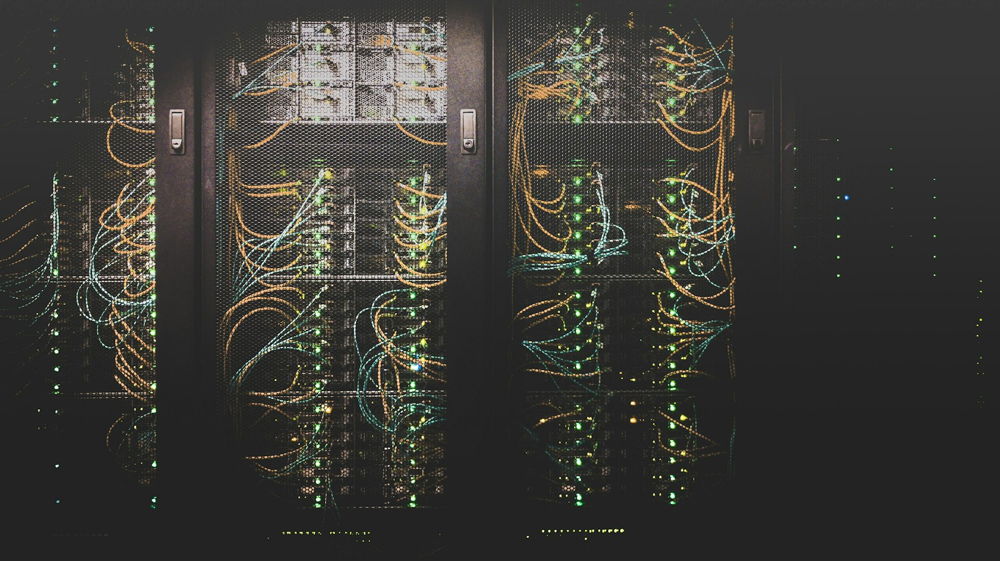
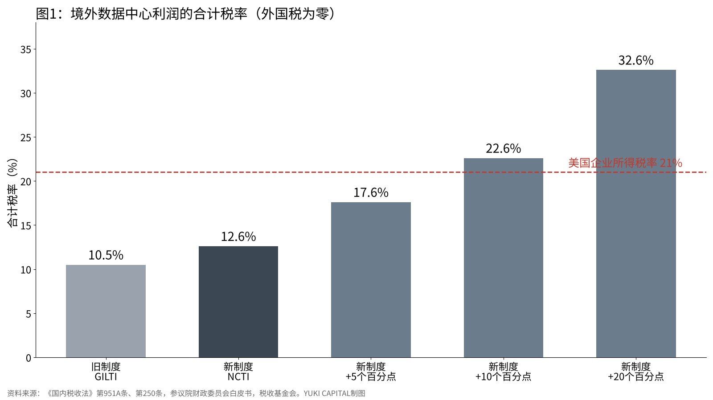
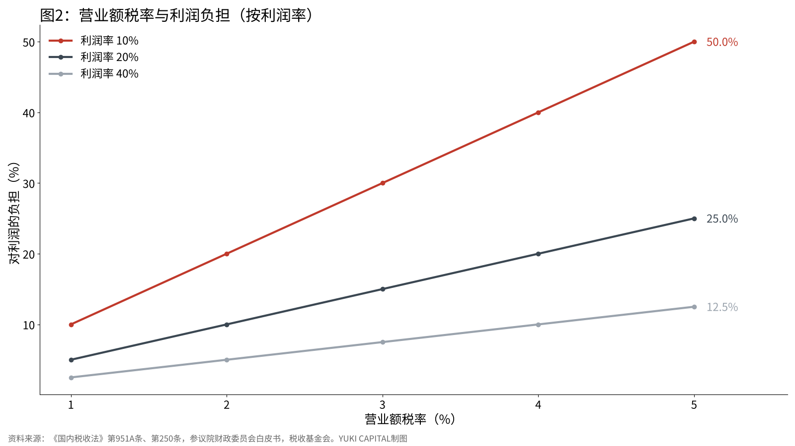

能否对在美国境外建设数据中心的企业征税？——用《国内税收法》第951A条和怀登参议员的白皮书检验特朗普总统的发言
2026年11月20日（美国时间），特朗普总统在记者会上表示，将对在美国境外建设数据中心的美国企业征收巨额税款[7]。他没有提到征税方式和法律依据。
同一周，美日台韩的AI相关股票大幅下跌。如果税收与设备所在地挂钩，超大规模云服务商每年数千亿美元的投资计划可能改变。
本文的问题是：对境外数据中心征税的机制是否已经存在？新的税收能否让在境外建设比在境内更不划算？

- 境外子公司的利润已作为"受控外国公司净测试所得（原GILTI）"按12.6%的实际税率缴纳美国税。与境内21%的企业所得税相差8.4个百分点，附加税超过8.4个百分点，境外的税收优势就会消失。
- 国会的提案（沃纳参议员、怀登参议员）方向是取消对"境内新建数据中心"的优惠，而不是针对境外，与总统的发言方向相反。
- 对营业额征税，利润率越低的企业负担越重。4%的营业额税，对利润率10%的企业相当于利润的40%。税的形式决定了谁吃亏。
问题与背景
美国的企业所得税率为21%。美国企业在外国设立子公司并在当地获利，这部分利润由外国征税。美国税法把这类子公司称为"受控外国公司（CFC）"，即美国股东持有超过50%表决权或价值的外国法人[3]。
2017年的税制改革引入了每年对CFC利润征收美国税的机制，即"GILTI（全球无形资产低税所得）"[3]。作为股东的美国法人可以扣除这部分所得的50%，因此实际税率为21%×50%＝10.5%[4][5]。
2025年7月通过的税法（H.R.1）把GILTI改名为"受控外国公司净测试所得（NCTI）"，并把可扣除比例降到40%[5][6]。2026年起实际税率为21%×60%＝12.6%。此前可把外国工厂和设备账面价值的10%从所得中扣除的"有形资产扣除"也被取消[8]。
数据中心恰恰是有形资产的集合。在旧制度下，相当于境外设备账面价值10%的利润免税。新制度取消了这一免税额度，因此境外数据中心的利润已经比以前税负更重。
另一方面，国会在讨论另一个方向。2026年7月，沃纳参议员提出法案，不允许AI数据中心的设备享受即时折旧[2]。8月，参议院财政委员会民主党工作人员发布白皮书，提议对数据中心的营业额征收"低个位数"的税[1]。两者针对的都是美国境内的新建数据中心。
这里先定义两个术语。"即时折旧"是指设备的购买费用不分摊多年，在购买当年全额计入费用。"超大规模云服务商"是指自己拥有巨型数据中心、向全球销售云服务和AI的大企业，如亚马逊、微软、谷歌、Meta等。取消即时折旧后，税款总额不变，但缴税时间提前。
白皮书中只有一行提到境外。面向美国市场的境外数据中心"需要进一步研究"，太空中的数据中心如果向美国客户销售也将征税，并从付款中预扣[1]。针对境外的征税，在国会也还没有成形。
数据与方法
使用的资料包括《国内税收法》第951A条（CFC所得的合并计入）和第250条（所得扣除）[3][4]、2025年税法的条文[9]、美国国税局关于8992表的说明[10]、参议院财政委员会的白皮书[1]以及税收基金会的测算[2]。会计师事务所的解读[5][6][8]用于核对条文的理解。
第一项计算是境外数据中心利润承担的美国税实际税率。公式为"企业所得税率21%×（1−扣除比例）"，扣除比例旧制度为50%，新制度为40%。在外国缴纳的税可以通过外国税收抵免扣除，但新制度下最多只能抵免90%[5]。
第二项计算把总统所说的"巨额税"设为对境外数据中心利润的附加税率s，进行比较。境外合计税率为"12.6%＋s"，境内为21%，s分别取0、5、10、20个百分点。
第三项计算把白皮书的营业额税换算成对利润的负担。设营业额税率为g、利润率为m，对利润的负担为"g÷m"。g取1%至5%，m取10%、20%、40%，观察敏感度。
结果
境外数据中心利润承担的美国税，从旧制度的10.5%升至新制度的12.6%。税率上升2.1个百分点，而且由于有形资产扣除被取消，设备多的数据中心应税所得本身也会变大。与境内21%的差距从10.5个百分点缩小到8.4个百分点。
| 情形 | 境外合计税率 | 与境内（21%）的差 |
|---|---|---|
| 旧制度（GILTI，扣除50%） | 10.5% | −10.5个百分点 |
| 新制度（NCTI，扣除40%） | 12.6% | −8.4个百分点 |
| 新制度＋附加5个百分点 | 17.6% | −3.4个百分点 |
| 新制度＋附加10个百分点 | 22.6% | ＋1.6个百分点 |
| 新制度＋附加20个百分点 | 32.6% | ＋11.6个百分点 |
再看规模。高盛预计美国几家大企业2026年与AI相关的资本支出为5,810亿美元[2]。假设其中一成建在境外，并产生相当于投资额10%的利润，利润约为58亿美元。附加10个百分点，美国可增加约5.8亿美元税收。
附加税超过8.4个百分点，在境外建设的税收优势就会消失。反过来说，不需要"巨额"，约10个百分点的附加税就能让境内外税负持平。不过，这是外国税为零时的计算。

白皮书的营业额税，负担随利润率变化很大。下图按利润率画出营业额税率与利润负担的关系。

敏感度分析
2%的营业额税，对利润率40%的企业只相当于利润的5%，对利润率10%的企业则相当于20%。如果是4%，利润率10%的企业负担为40%，利润率20%的企业为20%。税收基金会也测算，4%的营业额税对净利润的负担可能达到40%至200%[2]。
自用数据中心的大企业在AI和云业务上利润率较高。而出租设备赚取利差的企业，利润率往往较低。营业额税对借钱购置设备再出租的企业最重。
附加税的效果也取决于外国税的水平。如果在外国缴纳15%的税，新制度下可抵免15%×90%＝13.5%，高于美国的12.6%。此时追加的美国税为零，合计为15%。附加税是否放在这一抵免之外，效果差别很大。
讨论
也有相反的看法。税收基金会指出，对数据中心的新税会增加复杂性，可能把AI投资推向境外[2]。取消境内新建数据中心的优惠，反而可能增加在境外建设的理由。总统的发言，也可以理解为想阻止这一流向。
另一种看法是，决定选址的是电力和土地，而不是税。白皮书写道，美国境内数据中心的建设在过去4年增加了3倍[1]。如果电力难以保障，即使税负稍重，也会有企业选择境外。8.4个百分点的税率差，与电费差相比可能很小。
也要看规模。白皮书估计超大规模云服务商今年的数据中心投资约为7,000亿美元[1]。沃纳参议员提案的税收测算为10年约299亿美元[2]。与一年的投资额相比，税收小了一个数量级。
本文有三个局限。第一，总统的发言没有条文，附加税的形式是假设。第二，各国对外国税和最低税（15%）的处理不同，本文做了简化。第三，白皮书只写营业额税率为"低个位数"[1]。
检验标准是条文是否出台。如果附加税以降低NCTI扣除比例的形式出现，可以直接使用本文的表。如果是营业额税，看图中利润率的线即可。如果两者都没有出台，这次发言只是让市场波动了一下。
结论
境外数据中心的利润已经承担12.6%的实际美国税。与境内相差8.4个百分点，附加税超过这一水平，境外的税收优势就会消失。国会的提案方向是取消境内优惠，与发言方向不同。根据税的形式，负担更重的是利润率低、出租设备的一方。
我这样看
我在日本，我的实业在日本国内完成，没有考虑在海外设立据点或设备。以几亿日元的规模，还不到在意外国税的阶段。我持有的是AI前沿企业的股票。即使开征营业额税，我认为负担更重的是借钱购置设备的一方。所以这次发言不会让我调整持仓。
参考文献
- Senate Finance Committee Democratic Staff「Proposal for the Taxation of Data Centers」（2026年8月） https://www.finance.senate.gov/imo/media/doc/080626_wyden_data_center_tax_white_paper.pdf
- Tax Foundation「New Congressional Data Center Tax Proposals Threaten US AI Investment」（2026年8月13日） https://taxfoundation.org/blog/congressional-data-center-tax-proposals-us-ai-investment/
- 26 U.S. Code § 951A（Cornell LII） https://www.law.cornell.edu/uscode/text/26/951A
- 26 U.S. Code § 250（Cornell LII） https://www.law.cornell.edu/uscode/text/26/250
- EY Tax News「International tax changes in final reconciliation legislation」（2025年7月29日） https://taxnews.ey.com/news/2025-1613
- WilmerHale「International Tax Provisions of the One Big Beautiful Bill Act」（2025年7月14日） https://www.wilmerhale.com/en/insights/client-alerts/20250714-international-tax-provisions-of-the-one-big-beautiful-bill-act-obbba
- みんかぶFX「NY時間に伝わった発言・ニュース」（2026年11月21日） https://fx.minkabu.jp/news/385141
- Plante Moran「One Big Beautiful Bill modifies international tax rules」（2025年10月） https://plantemoran.com/explore-our-thinking/insight/2025/10/one-big-beautiful-bill-modifies-international-tax-rules-enacted-in-the-tcja
- Congress.gov「H.R.1 - One Big Beautiful Bill Act」 https://www.congress.gov/bill/119th-congress/house-bill/1
- IRS「About Form 8992」 https://www.irs.gov/forms-pubs/about-form-8992
图表由YUKI CAPITAL制作。照片：Unsplash
每天的数字和判断，我都记录在X上。